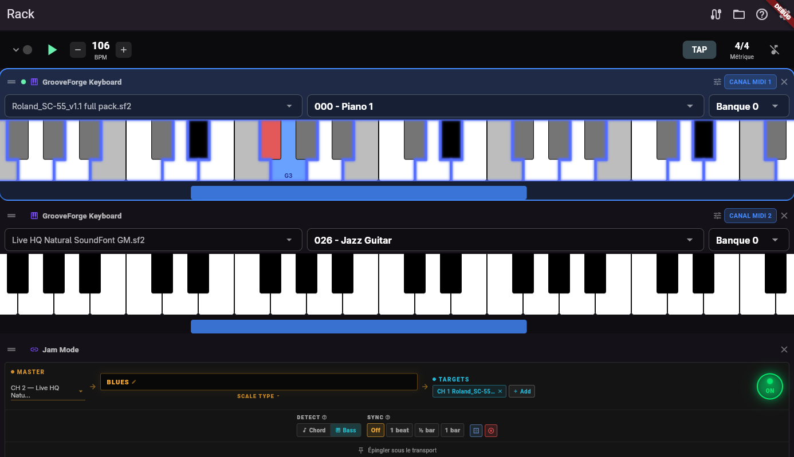

Modules intégrés
Rôle de chaque type de slot et comment il se branche au reste du patch.

.gfpd, MIDI FX, Jam Mode, looper, batterie, etc.Clavier GrooveForge
Moteur SoundFont (.sf2) multi-timbre avec jusqu’à 16 canaux MIDI par slot, banque/programme par canal,
vocodeur optionnel par slot et gestes sur le clavier à l’écran. Branchez le MIDI IN depuis le matériel
ou le piano virtuel / looper ; l’audio OUT rejoint le bus principal ou d’autres effets via les câbles patch.
Piano virtuel
Clavier tactile sans son interne — il ne fait que transmettre le MIDI par ses jacks. Idéal devant un instrument SoundFont ou VST. Connectez Scale IN depuis Jam Mode pour la coloration des degrés et l’alignement sur la gamme.
Vocodeur (GFPA)
Slot dédié avec porteuses (dent de scie, carré, choral, naturel/PSOLA), pitch bend MIDI et vibrato (CC1), modulation par micro. Plusieurs vocodeurs peuvent coexister.
Stylophone et Theremin
Bande monophonique Stylophone et pavé Theremin avec MIDI OUT vers le rack. Le Theremin propose le mode CAM sur certaines plateformes (mouvement via caméra avant — voir la politique de confidentialité).
Jam Mode
Processeur en instance unique : choisissez un canal maître ; lorsque le maître joue des accords ou une basse (réglable), les claviers et vocodeurs cibles se verrouillent sur la gamme dérivée. Types de gammes, fondamentale alignée sur le BPM et bandeau épinglé sous le transport. S’associe au Scale IN du piano virtuel ou au verrouillage de gamme interne des claviers.

MIDI Looper
Boucleur MIDI multipiste avec surdub, muet par piste, inversion, vitesse et quantification. Le MIDI IN peut être toute
source en amont ; le MIDI OUT alimente les instruments. L’état est stocké dans les projets .gf.
Générateur de batterie
Boîte à rythmes synchronisée au transport, pilotée par des fichiers .gfdrum : grilles
de pas, humanisation, swing, fills et compte à rebours optionnel. Utilise les notes de batterie General MIDI sur la
SoundFont choisie.
Effets descripteurs et MIDI FX
Les plugins .gfpd fournis incluent réverb, delay, wah, EQ, compresseur, chorus (audio)
et harmoniseur, arpégiateur, transposeur, expansion d’accords, courbe de vélocité, gate (MIDI). Vous pouvez charger
des descripteurs personnalisés depuis le disque.